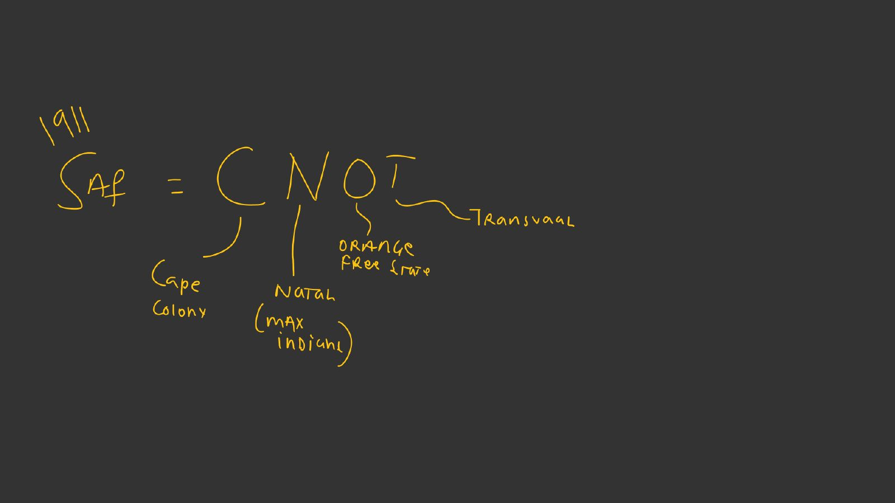
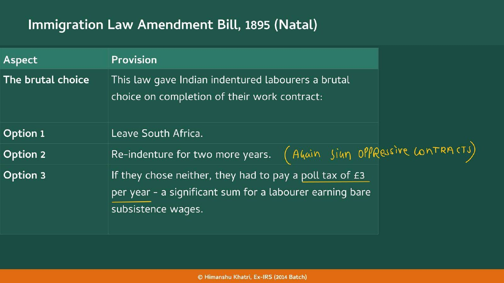
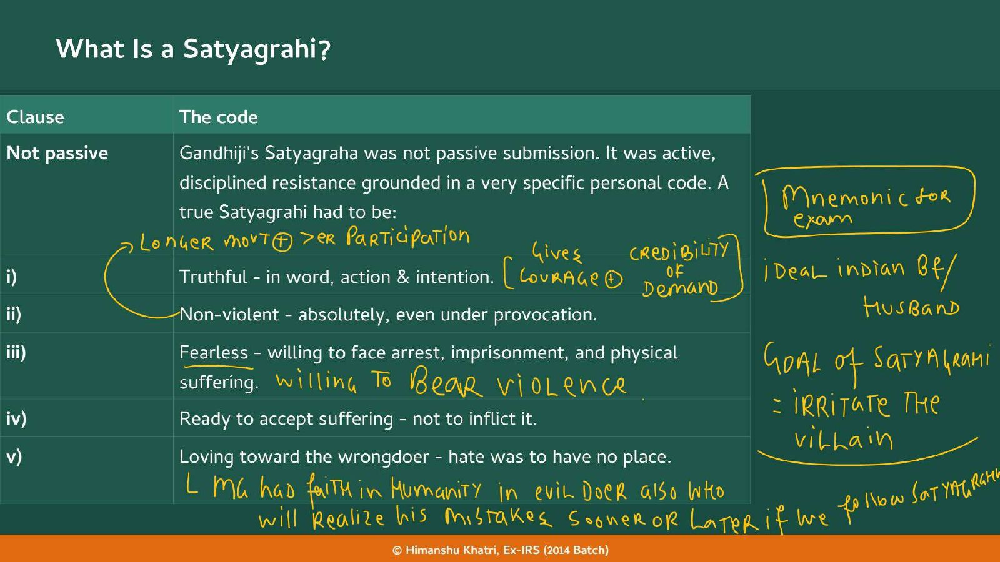
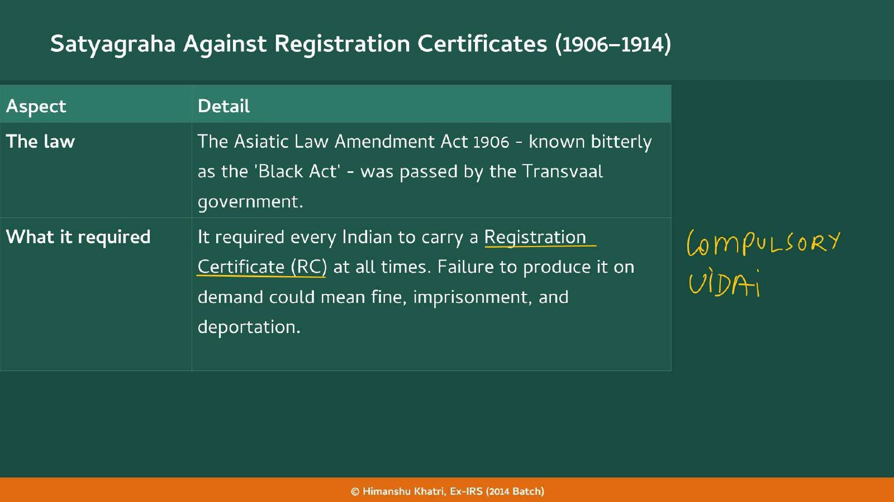

Chapter 36: Mahatma Gandhi's Ideology
Ruskin's influence (Phoenix) and Tolstoy return as sources of Gandhian ideology; the Satyagrahi code and ashram model are developed there.
| Year | Paper | Topic | Answer |
|---|---|---|---|
| 2019 | Prelims | (Prelims 2019) | (B) 1 and 3 |
Natal and Transvaal were the laboratory: the code, the training farms and the mass method were all tested there before 1915.
Read it like a film first. Then go to the notes: every fact below is expanded there.
Story spine: Injustice, then a method, then a mass movement, then victory: an ejection and two Natal laws (injustice) lead to petitions (Phase 1), then to Satyagraha (the method) built on a code and two training farms, then to the 1913 turn (mass), and finally to the three-demand settlement of 1914 (victory).
| Character | Role in the story | Hook |
|---|---|---|
| Mohandas Karamchand Gandhi | Young barrister who stayed 22 years; founded the NIC, Phoenix and Tolstoy Farm | The Barrister Who Stayed |
| Memon Muslim merchant | Voluntary migrant trader whose case brought Gandhiji in 1893 | The Client |
| Indentured labourers | Contract-tied workers in sugar and mines; hit by the £3 poll tax | The Bonded |
| John Ruskin | Author of Unto This Last that inspired Phoenix Settlement 1904 | The Book Behind Phoenix |
| Leo Tolstoy | Russian writer whose ideas on non-violent resistance named Tolstoy Farm 1910 | The Farm's Namesake |
| Gopal Krishna Gokhale | Gandhiji's political mentor; visited 1912; advised Poll Tax and RC | The Mentor |
| Kasturba Gandhi | Arrested in 1913; galvanised the Indian workers | The First Lady of the Strike |
| Viceroy Hardinge 10-16 | Publicly condemned South Africa's treatment of Indians | The Voice from the Empire |
| South African government | Passed the 1894, 1895, 1906 and 1907 laws; broke its promises twice | The Promise-Breaker |
| Key term | In plain words |
|---|---|
| Indentured labour | Contract-bound, tied labour: a step above slavery in name only |
| Memon Muslims | Traders and merchants who came to South Africa voluntarily |
| Taxation without Representation | Paying taxes with no say in who governs: the grievance behind the 1894 Franchise Bill, like 1776 |
| Poll tax | £3 a year on ex-indentured labourers who neither left nor re-indentured (1895) |
| Natal Indian Congress | Gandhiji's 1894 body, modelled on the INC; not the INC itself |
| Indian Opinion | Gandhiji's newspaper to publicise Indian grievances; printed at Phoenix |
| Satyagraha | Active, disciplined, non-violent resistance with a five-clause personal code |
| Black Act | Asiatic Law Amendment Act 1906 (Transvaal): Registration Certificate compulsory |
| Registration Certificate (RC) | Identity card Indians had to carry at all times, on penalty of fine, jail and deportation |
| Jail Bharo | Courting arrest to fill the jails |
| Passive Resistance Association | The body through which the RC Satyagraha ran |
| Phoenix and Tolstoy Farm | Gandhiji's 1904 and 1910 communal settlements, precursors of his Indian ashrams |
Remember it as South Africa was Gandhiji's laboratory: the code, the training farms and the mass method were all tested there before 1915.
| Year and paper | What was asked | The answer or trap | Where in this chapter |
|---|---|---|---|
| Prelims 2019 | Three statements: (1) Mahatma Gandhi was instrumental in the abolition of the system of Indentured Labour; (2) in Lord Chelmsford's War Conference Gandhi did not support the resolution on recruiting Indians for the World War; (3) after the breaking of the Salt Law the INC was declared illegal. Options: (a) 1 and 2 (b) 1 and 3 (c) 2 and 3 (d) 1, 2 and 3 | (b) 1 and 3. Statement 1 is true (the handout's "examiner-tested anchor"). Statement 2 is false: at the April 1918 Delhi War Conference Gandhi did support recruitment. Statement 3 is true: the INC was declared illegal after the Salt Law was broken in 1930. Only statement 1 comes from this chapter | Section 2 (indentured labour) and the exam traps at the end |
| Group | Share |
|---|---|
| Indigenous Bantus | roughly 70% |
| European settlers | 18% |
| Mixed race | 9% |
| Asians | 3% |

| Group | Who they were |
|---|---|
| Memon Muslims | Traders and merchants who came voluntarily |
| Indentured labourers | Men and women brought under bond contracts (essentially tied labour), arriving in numbers after 1890 to work on sugar plantations and in mines. Legal standing precarious, rights minimal, voice nearly non-existent |
| Option | What it meant |
|---|---|
| 1 | Leave South Africa |
| 2 | Re-indenture for two more years |
| 3 | If neither, pay a poll tax of £3 per year, a large sum for a labourer on bare subsistence wages |

| Clause | The code |
|---|---|
| i | Truthful in word, action and intention |
| ii | Non-violent absolutely, even under provocation |
| iii | Fearless: willing to face arrest, imprisonment and physical suffering |
| iv | Ready to accept suffering, not to inflict it |
| v | Loving toward the wrongdoer: hate has no place |


| Step | What happened |
|---|---|
| 1 | Illegal crossing into Transvaal: Indians openly defied the Transvaal Immigration Restriction Act |
| 2 | Kasturba Gandhi arrested, which galvanised the whole Indian worker community |
| 3 | Gandhiji led a march of 2,000 workers into Transvaal; arrested marchers rejoined after release, swelling numbers |
| 4 | All Indian workers across the province went on strike: economic disruption became impossible to ignore |
| 5 | Gokhale travelled across India, building public opinion and political pressure |
| 6 | Viceroy Hardinge 10-16 publicly condemned the South African government: unprecedented pressure from within the British Empire |
| Result | The South African government came to the table; talks were held with Gandhiji |
| Feature | Phase 1: Constitutional (1896-1906) | Phase 2: Extra-Constitutional (1906-1915) |
|---|---|---|
| Method | Petitions, prayers, public meetings, press | Satyagraha: bonfire of RCs, Jail Bharo, illegal crossings, hawking, strike, march |
| Bodies | Natal Indian Congress; Indian Opinion | Passive Resistance Association; Phoenix; Tolstoy Farm |
| Spirit | Moderate, like the INC Moderates | Active, disciplined, non-violent resistance |
| Leaders and base | Educated Indians: lawyers, merchants | Mass character from 1913: indentured labourers join |
| Year | What happened |
|---|---|
| 1893 | Gandhiji arrives; ejected at Pietermaritzburg: political catalyst ★ |
| 1894 | Franchise Amendment Bill (Natal); Natal Indian Congress founded ★ |
| 1895 | Immigration Law Amendment Bill (Natal): leave, re-indenture or £3 poll tax ★ |
| 1896 | Constitutional phase begins (to 1906): petitions, prayers, Indian Opinion |
| 1904 | Phoenix Settlement near Durban, inspired by Ruskin's Unto This Last ★ |
| 1906 | Asiatic Law Amendment Act (Black Act): RC compulsory; Satyagraha begins (to 1914) ★ |
| 1907 | Transvaal Immigration Restriction Act: inter-provincial movement barred |
| 1908 | Gandhiji jailed; prisons overflow |
| 1910 | Tolstoy Farm near Johannesburg ★ |
| 1912 | Gokhale visits; promise broken; advice: Poll Tax and RC |
| 1913 | Christian-marriage judgement; Poll Tax Campaign goes mass; march of 2,000; Kasturba arrested; strike; Hardinge 10-16 condemns ★ |
| 1914 | Poll Tax abolished, RC dropped, Indian marriages validated ★ |
| 1915 | January: Gandhiji returns to India ★ |
Ruskin's influence (Phoenix) and Tolstoy return as sources of Gandhian ideology; the Satyagrahi code and ashram model are developed there.
Champaran 1917 is the first Satyagraha on Indian soil; the South African laboratory feeds Champaran, Kheda and Dandi.
The Moderates' petitions, prayers and press are the Phase 1 playbook; Gokhale was the Moderate mentor.
Contrast: violent revolutionaries in India during the years of Satyagraha in South Africa.
Overseas Indians in the same years; Ghadar chose armed revolt while Gandhiji chose Satyagraha.
Read the question, answer in your head, then tap to check.
| Why did Gandhiji go to South Africa and why did he stay? | 1893: as a young barrister for a Memon Muslim merchant's commercial case. Ejected at Pietermaritzburg despite a first-class ticket, he resolved to fight racial discrimination; the leaderless Indian community persuaded him to stay (22 years). |
| Population groups of South Africa? | Bantus 70%, European settlers 18%, Mixed race 9%, Asians 3%. |
| Teacher's mnemonic for the four provinces (1911)? | SAf = CNOT: Cape Colony, Natal (maximum Indians), Orange Free State, Transvaal. |
| Two kinds of Indians in South Africa? | Memon Muslim traders and merchants (voluntary); indentured labourers (bond contracts, sugar plantations and mines, after 1890). |
| What was indentured labour? | A contract-bound, tied labour system, a step above slavery in name only: a fixed term under conditions hard to escape. |
| Franchise Amendment Bill 1894? | Natal Bill to disenfranchise Indians on racial grounds; some had qualified by property. Called Taxation without Representation, like 1776. |
| Immigration Law Amendment Bill 1895? | After the contract: leave, re-indenture for two years, or pay a £3 poll tax a year (to make settlement unsustainable). |
| Phase 1 (1896-1906) methods? | Petitions, prayers, public meetings; Natal Indian Congress (modelled on the INC); Indian Opinion newspaper; a Moderate approach. |
| NIC versus INC? | NIC 1894, founded by Gandhiji in South Africa; INC 1885, not his. |
| Why did Gandhiji turn to Satyagraha in 1906? | Constitutional methods failed; the government was unmoved by petitions; a direct but non-violent method was needed. |
| The five clauses of the Satyagrahi's code? | Truthful; non-violent; fearless; ready to accept suffering, not inflict it; loving toward the wrongdoer. |
| Teacher's mnemonic and goal for the code? | "iDeal indian Bf/Husband"; goal of a Satyagrahi = irritate the villain; Gandhiji had faith the evil-doer will realise his mistakes. |
| Phoenix Settlement? | 1904, near Durban, inspired by Ruskin's Unto This Last; self-reliance and simple living; Indian Opinion printed there; first communal experiment. |
| Black Act? | Asiatic Law Amendment Act 1906 (Transvaal): every Indian must carry a Registration Certificate at all times; penalty fine, imprisonment, deportation. |
| What broken promise led to the bonfire? | The government offered to withdraw the law if Indians registered voluntarily; Gandhiji registered first; the promise was broken; bonfire of RCs, Jail Bharo, via the Passive Resistance Association. |
| Transvaal Immigration Restriction Act 1907? | Barred free movement from Cape, Natal and Orange Free State into Transvaal; resisted by illegal crossings, refused bail, hawking without licence; Gandhiji jailed 1908. |
| Tolstoy Farm 1910? | Near Johannesburg; residential base for Satyagrahis and families; part ashram, part training ground; named after Leo Tolstoy. |
| Progression of Gandhi's settlements? | Phoenix Settlement (1904) to Tolstoy Farm (1910) to Sabarmati/Sevagram in India. |
| Gokhale in 1912? | Visited South Africa; the government promised repeal and then broke it; advised focus on Poll Tax and RC abolition. |
| Why did the 1913 campaign go mass? | The Poll Tax hit indentured labourers directly, so the working class joined; the Christian-marriage judgement made every family a stakeholder. |
| The 1913 marriage judgement? | The Supreme Court held only Christian marriages valid: Hindu and Muslim wives not legally wives, children potentially illegitimate. |
| Six steps of the final struggle? | Illegal crossing into Transvaal; Kasturba arrested; march of 2,000 workers; province-wide strike; Gokhale's India tour; Hardinge 10-16 condemns. Result: talks. |
| The three concessions? | Poll Tax abolished; RC dropped; Indian marriages validated. Return to India January 1915. |
| What did South Africa teach Gandhiji? | Mass civil disobedience works; ordinary people can fight non-violently; the law's weapon is neutralised by accepting punishment without fear; Natal and Transvaal as laboratories for Champaran, Kheda and Dandi. |
| Where was Satyagraha first used? | Developed in South Africa; first use on Indian soil was Champaran 1917. |
| Prelims 2019 statement on indenture? | Gandhi was instrumental in its abolition (true). He supported the 1918 War Conference recruitment (so statement 2 is false). Answer (b) 1 and 3. |
| What does the teacher say about this chapter? | "We won't do in class", "Upon student voluntary", "No PYQ", "Bipan Chandra chapter therefore included". Prelims 2019 still tests its indenture anchor. |
| Practice Mains: "Gandhiji did not bring Satyagraha to India; he brought it back from South Africa." Examine. | Intro: 22 years (1893-1915) of experiment. Body: code (five clauses); training grounds (Phoenix 1904, Tolstoy 1910); repertoire (bonfire of RCs, Jail Bharo, illegal crossings, hawking, strikes, march); mass turn of 1913. Closing: Natal and Transvaal were the laboratories for Champaran, Kheda and Dandi. |
| Practice Mains: What converged in 1913 to bring the South African struggle to its peak? | Intro: until 1913 an educated-led struggle. Body: Poll Tax Campaign drew in labourers; the Christian-marriage judgement hit every family; Kasturba's arrest, the 2,000-worker march, strike and Hardinge 10-16's condemnation. Closing: talks and the 1914 settlement (Poll Tax abolished, RC dropped, marriages validated). |
| Who was Hardinge 10-16 in this story? | The Viceroy who publicly condemned the South African government's treatment of Indians: pressure from within the British Empire. |
| How was the Poll Tax linked to indentured labour? | It was the penalty on ex-indentured labourers who chose neither to leave nor to re-indenture: £3 a year (1895); abolished 1914. |
Tap the card to flip.